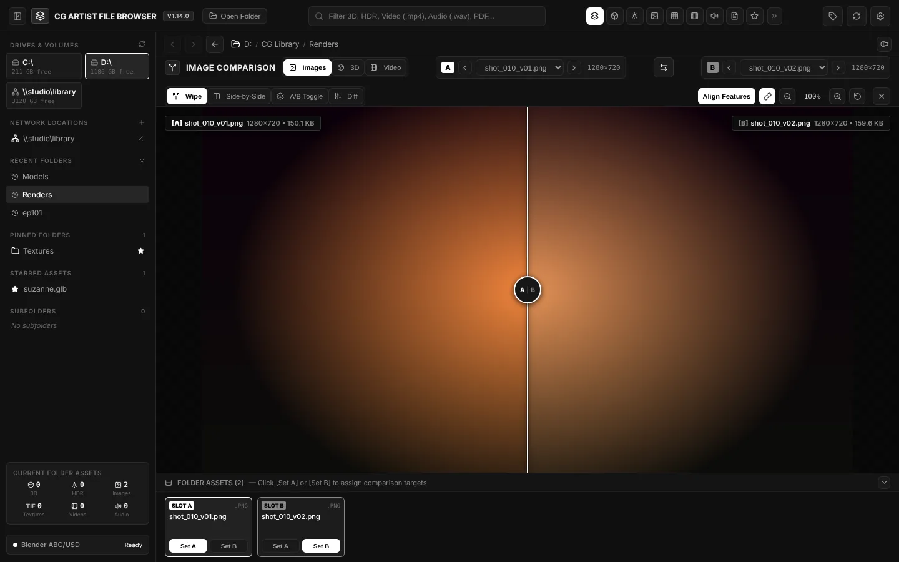

Deep dive
Compare
Comparing two images, two renders, two videos or two 3D models: picking A and B, the four modes, and the keys.
Choosing A and B
Each card has an A and a B button. Press one and the file is put into that slot; a file can be in only one slot. The compare bar at the bottom of the folder shows what is in each slot. Compare opens the comparison, and the cross removes a slot. The swap button turns A into B and B into A.

The four modes
The modes sit in the top bar of the comparison, and the keys 1 to 4 pick them:
- Wipe (
1): a divider runs down the middle. Drag it to show more of A or B. - Side by side (
2): both pictures are shown next to each other. - A/B toggle (
3): the picture switches between A and B in place.Spacealso switches between A and B. - Diff (
4): shows where the two pictures differ.


Zoom and pan
Pan and zoom move both pictures together, so the same spot stays in view for each. R resets the view. Use it when a comparison has drifted.
Video and 3D
Two videos compare the same way. X switches between A and B, Space plays and pauses, and the arrow keys step one frame (Shift with an arrow steps one second). Two 3D models compare in the same window, and F frames them. > Note: For 3D models the fourth key (diff) does nothing.
Found a mistake or something missing? Edit this page on GitHub.